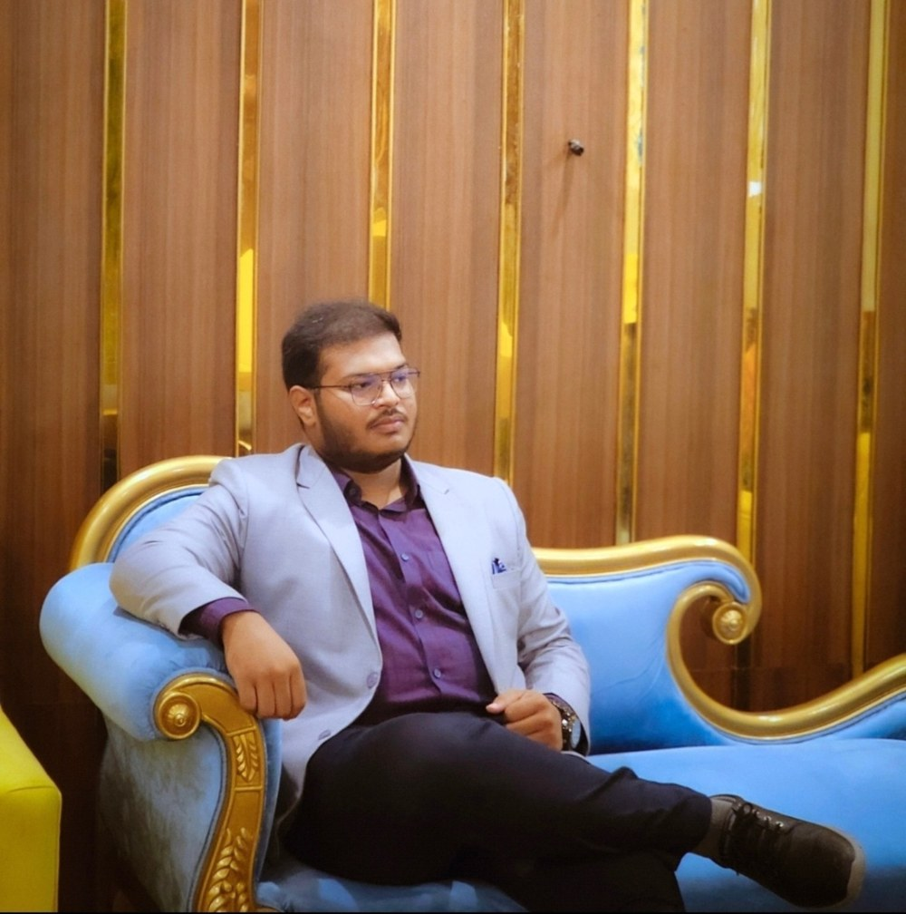

Why?

There was a time when I thought a website had to be something complicated.
Something built by someone who knew how to code, hosted somewhere mysterious, and probably required a lot more technical knowledge than I had.
Then I decided to build one anyway.
Welcome to Tasif's Den.
This isn't meant to be a perfect portfolio or a polished version of my entire life. It's simply a place where I can collect the things that make me me.
I'm an MBBS student, so a big part of my life revolves around lectures, anatomy, pharmacology, exams, notes, and the endless process of learning how the human body works.
But medicine isn't the only thing I'm interested in.
I've always enjoyed photography—especially those ordinary moments that somehow look extraordinary when you stop and frame them. A dramatic sky. A flower in the garden. A quiet evening. A distant landscape. A city after rain.
Sometimes I take a photograph without really knowing why.
Maybe I just like the way that particular moment feels.
And then there are the other things—travel, technology, gaming, projects, random ideas, and the curiosity to learn something new just because I can.
That's what I want this website to hold.
Not just achievements.
Not just certificates.
Not just a carefully constructed version of myself.
The journey.
Somewhere along the way, I want this place to become an archive of my student life, my photographs, things I'm learning, projects I'm building, places I'm exploring, and thoughts I don't want to forget.
Maybe I'll look back at these pages years from now and laugh at how everything looked in the beginning.
And honestly, I hope I do.
Because that would mean I kept growing.
So this is the beginning.
Tasif's Den.
A little corner of the internet where medicine meets photography, curiosity meets creativity, and ordinary moments get a place to stay.
“Build a mind that patients can trust blindly.”— TASIF
Welcome to my Den.